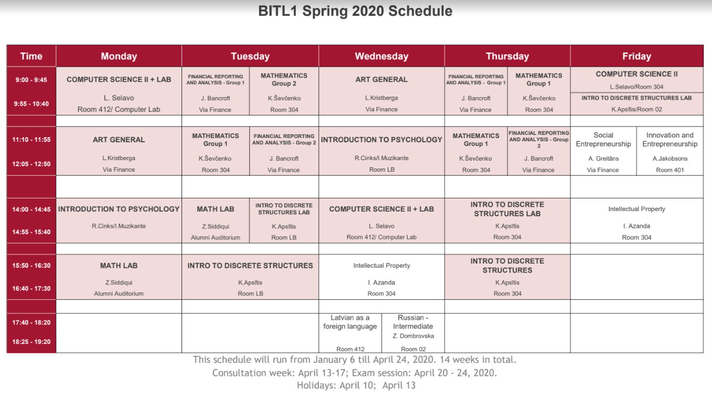

Neizmanto nelicencētu programmatūru vai neatbilstoši iegūtas grāmatu kopijas.
Cenšas nodrošināt diplomu kvalitātes garantijas.
Starpdisciplinaritāte
BITL schedule
Augstas likmes
Vēlamais finansēšanas modelis: Valsts, mācību maksas (stipendijas), privātuzņēmumi - kas pretī saņem sakarīgus studentus praksēs un augstskolas centienus padarīt studiju programmu industrijai aktuālu.
Stipendiju noteikumi - augsta vidējā atzīme
Salīdzinoši garas vasaras brīvdienas (maijs-augusts), “Internships”
Studijas RBS nevar apvienot ar darbu.
Studijas prasa darbaspējas, psiholoģisku noturību, spēju risināt jautājumus atbilstoši “pieaugušo pasaules” noteikumiem, pildīt saistības, laikā iesniegt uzdevumus, darboties komandās.
Vai tikai BITL vai arī BBA? Beigās izlēma, ka būs abas programmas (ap 70 cilvēki).
Kāda būs pašvaldības atsaucība?
Kas notiks ar projektiem pēc semestra beigām?
Problēmtēmas Bauskas pašvaldībā
Bauskas problēmtēmu uzklausīšana (to dara pasniedzēji).
Studenti mācās atsijāt idejas (ideation sessions)
Komandu veidošana līdzīga hakatonam (pitching, trūkstošo cilvēku uzaicināšana pēc krāsām/lomām)
9 komandas, 7-8 cilvēki katrā (iespējams, tās ir pārāk lielas)
BBA un BITL studenti darbojas kopā
Izbraukuma sesijas Bauskā; daļa darba ir attālināta saziņa.
Projektu piemēri - 1
Informatīva vietne ģimnāzistu konsultēšanai par apmaiņas programmām un citām skolēnu (un skolotāju) izaugsmes iespējām.
Balsošanas vietne par Bauskas vecpilsētas renovācijas projektiem un idejām.
“Orientēšanās tūrisma” velomaršruts pa Bauskas apkārtni, kur dalībnieki skenē QR kodus un pilda mazus uzdevumiņus.
Kaut kas līdzīgs “Manabalss.lv” - bet tikai Bauskas pašvaldības projektiem.
Bauska.lv mājaslapas apmeklētājiem iespēja pieteikties saņemt jaunumus e-pastā.
Projektu piemēri - 2
Bauskas karjeras konsultāciju vietne - personības testi, cilvēku mudina kaut ko apskatīt, satikties ar dzīvu karjeras konsultantu, kaut kur pieteikties.
Interaktīva karte ar slāņiem, kur parādītas Bauskas apmeklētājam svarīgas lietas (ēstuves, apskates objekti, tualetes)
Pašvaldības projektu darbplūsmas vieta - integrējas ar pašvaldības datiem, parāda to statusu/progresu vienkāršam iedzīvotājam saprotamākā veidā.
Reklāmas videorullīši, kas parāda Bauskas skaistumu rudens/ziemas sezonā; to izplatīšana sociālajos tīklos.
Ietirgotās naudas vietā - “validācija”
Studentu projektam (vismaz kaut kādā minimālā līmenī - kuru studenti var paši skaidri nodefinēt un saskaņot ar visiem pasniedzējiem) ir jāiziet visas izstrādes stadijas - idejas apspriešana (Business Case u.c.); pārrunas ar stakeholders; projektēšana/Design; izstrāde, testēšana un ieviešana.
Atgriezeniskā saite jeb “validācija” - lietotāju statistika; atsauksmes; “conversion rate” vai soctīklu engagement metrikas; pašvaldības darbinieku vai citu profesionāļu interese turpināt darbu pie projekta.
Studentu projekti decembrī beidzas. Bet tiek pieņemts, ka (vismaz veiksmīgākie projekti) var tikt turpināti vai nodoti pašvaldību/skolu u.c. ziņā.